核心观点
人工智能104：AutoResearch与选股策略自进化
本文借鉴Karpathy的AutoResearch思想，探索如何将量化选股研究组织为可执行、可回溯、可约束的策略自进化流程。我们认为，选股策略自进化的核心不是让模型无约束搜索参数，而是将投资逻辑、可调边界、样本隔离、版本保留和结果复盘写入Skill，使策略迭代在明确研究协议下持续推进。以稳健低波价值优选策略为例，保留改进版本在测试集上实现较为稳健的提升：年化收益率由13.47%升至15.67%，夏普比率由0.69升至0.89，同时年化波动率和换手率均有所下降。
从手工试验到有约束的研究循环
量化选股研究本质上是在投资假设、数据约束和评价指标之间持续迭代。传统流程依赖研究员手工试验，容易出现版本记录不完整、修改归因不清晰和不够高效等问题。AutoResearch的启发在于，研究可以被拆解为有纪律的循环，进而被AI Agent自动迭代。本文据此将选股策略自进化框架划分为策略协议、版本管理和样本隔离三层，分别约束可调边界、记录版本路径，并通过训练集、验证集和测试集分工降低过拟合风险。
自进化Skill：从说明文档到可执行研究协议
我们将Skill设计为连接策略逻辑与回测流程的可执行研究协议。其结构包括五部分：策略内核用于明确选股逻辑和不可偏离的投资假设；数据与因子边界规定可使用因子、方向定义和派生口径；组合约束定义股票池、调仓频率、持仓数量、单票上限和交易成本等；迭代边界规定优先通过配置入参调整，原则上不修改公共代码；评价体系则明确训练集、验证集和测试集的使用权限。实现上，SKILL.md负责策略说明与操作纪律，skill_config.yaml保存可调参数，策略生成和回测脚本读取配置并输出版本化结果。
从验证到测试：验证集驱动的改进具有一定外推效果
从迭代轨迹看，验证集保留版本的夏普比率由初始版本的1.05逐步提高至1.29附近，说明在固定策略内核、限制可调方向的前提下，配置化迭代能够形成较清晰的改进路径。测试集结果相对更克制，部分验证集保留版本并未同步改善，但测试集运行最优线仍由初始版本约0.69抬升至0.89，说明验证集筛选具备一定外推效果。与此同时，验证集与测试集之间存在正相关关系，但并非强线性关系。
策略迭代复盘：从反复尝试中形成逻辑推进路径
从保留版本路径看，策略改进主要来自多次小幅、可解释的配置调整，而非单次大幅改造。有效方向集中在红利防守权重、价值基础池阈值、组合缓冲持仓数、个股权重上限和流动性约束等变量上，这些调整均服务于稳健红利低波内核，即提高分红与现金流防守质量，改善估值安全边际，控制组合集中度和交易可行性。相较之下，部分复杂因子替换或偏离原始逻辑的尝试并未稳定进入优势版本，说明从逻辑推进可能优于纯粹的复杂因子堆叠。
风险提示：大模型是海量数据训练获得的产物，输出准确性及稳定性可能存在风险；不同大模型效果存在差异，需谨慎选择；非本地大模型处理敏感数据或有信息泄露风险。
正文
AutoResearch与选股策略自进化
量化选股研究的日常工作，可以看做是在一组投资假设、数据约束和评价指标之间持续迭代的过程。研究员通常先提出逻辑，再构造因子或规则，随后用回测结果判断策略优劣以及是否保留。这个流程看似清晰，但却十分消耗精力，常常顾此失彼，例如测试过程高度依赖手工经验，不同版本之间缺少统一记录，无法形成较为连贯的优化路径，又如策略改动经常受到最近一次回测结果影响，容易在不知不觉中贴合历史噪声。
大语言模型能力的提升，使得这一问题出现了新的解决思路。早期大模型更多被用于问答、总结和代码辅助，研究员仍然需要亲自设计实验、修改代码、运行回测和整理结论。但随着代码生成、工具调用和长上下文能力逐步成熟，“LLM Intelligence”开始逐步进化至“Agent Intelligence”，AI的思维操作更加连贯，在给定目标和约束后，能够连续完成阅读代码、提出修改、执行实验、观察结果和继续迭代等一系列动作。此时，大模型的价值不再只是替代某个局部环节，而是有机会参与完整的研究循环。
Karpathy的AutoResearch项目正是这一思路的代表案例。具体而言，AutoResearch将一个真实但相对简化的大语言模型训练任务交给AI Agent，Agent在program.md的指令约束下阅读项目，主要修改train.py，每轮运行固定5分钟训练实验，再根据验证指标判断结果是否改善，若改善则保留，若无效则回滚，并继续下一轮实验。换言之，AutoResearch已经不是简单的代码生成工具，而是一个基于AI Agent的自动化研究迭代框架。
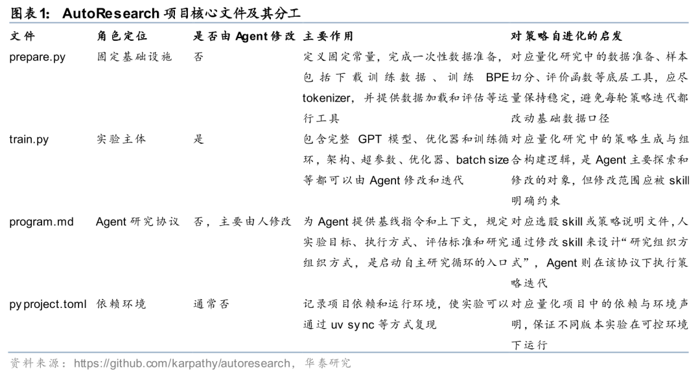
这一框架最值得借鉴的地方，在于它将研究拆解成了可被Agent执行的循环。program.md相当于研究组织方式，规定了Agent应该如何理解任务、修改哪里、观察什么指标、如何记录实验；固定时间预算保证不同实验之间具有可比性；保留和回滚机制则使研究过程能够持续向更优结果演化。对于基本面量化而言，这种思想启发我们：如果能够将投资逻辑、因子边界、组合约束、评价指标和版本纪律写入Skill，那么选股策略也可能从一次次手工试验，走向有约束的自动进化。
但是，量化投资场景与AutoResearch所面对的模型训练任务存在重要差异。模型训练通常可以围绕相对稳定的验证损失进行快速比较，而选股策略面对的是低信噪比、非平稳和强周期切换的市场数据。策略在某一阶段回测表现改善，未必代表投资逻辑真正增强，也可能只是贴合了特定市场风格、行业结构或历史噪声。因此，将Agent自动研究迭代引入量化策略时，关键不仅在于让Agent 尝试更多参数和规则，设计好样本隔离和版本保留纪律也至关重要。
方法
对于样本隔离，我们的解决方案是将策略自进化过程拆分为训练集、验证集和测试集三个权限边界。训练集用于提出和筛选策略假设，验证集用于判断某一版本是否值得保留，测试集则只用于最终人工复核，不进入自动调参闭环。通过这种设计，Agent可以在训练集和验证集之间持续迭代，但无法利用测试集信息来优化策略，从而在一定程度上降低过拟合风险。
基于上述考虑，我们将选股策略自进化框架拆分为三层：策略协议、版本管理和样本隔离。策略协议回答“策略可以怎样变化”，版本管理回答“每一次变化如何被记录和复盘”，样本隔离则回答“策略是否真的变好，而不是变得更贴合历史”。三者共同决定了Skill是否能够从一份静态说明文档，进一步变成一个可执行、可迭代的研究框架。
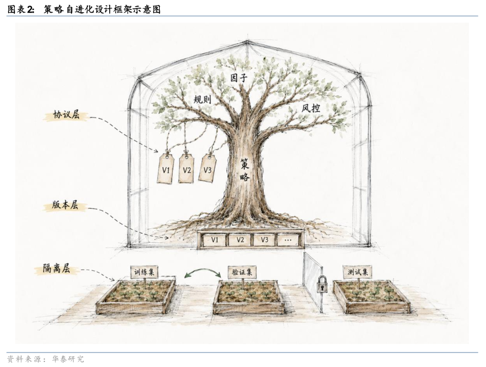
策略协议层
在策略协议层，Skill需要明确策略的核心投资逻辑、可使用的数据和因子、允许调整的规则边界，以及不允许随意修改的公共工具。以稳健低波价值优选策略为例，策略并不是简单买入股息率最高或历史波动最低的股票，而是在具备基本盈利能力和可交易性的股票中，先判断其是否具备相对估值安全边际，再结合分红质量、现金流防守、盈利稳定性和低波特征进行综合筛选。因此，Skill中需要明确价值基础池、红利防守、龙头质量、成长稳定、流动性约束和组合风险控制等模块的职责，并将每一轮迭代限制在一个主要假设之内，避免多个方向同时变化后无法归因。
版本管理层
在版本管理层，每一轮策略修改都应当形成独立版本。一个合格的版本目录不应只保存最终收益曲线，还应保存当时使用的配置文件、组合权重、打分记录、调仓日期、持仓明细以及分样本回测结果。这样做的意义在于，策略优化不再是一次次零散试验，而是逐步形成一条可回溯的优化路径。即便某一轮修改失败，也可以明确知道失败来自价值基础池阈值不合适、红利防守权重过高或过低、低波约束失效、流动性筛选过紧，还是组合持仓数量和权重上限设置不当。
样本隔离层
样本隔离是量化策略自进化区别于一般AutoResearch的关键环节。我们将样本划分为训练集、验证集和测试集。训练集用于生成策略和完成初步筛选，验证集用于判断版本是否可以保留，测试集则只用于最终人工复核，不进入自动调参闭环。只有当策略在训练集和验证集之间都能体现出较为一致的改善时，才能认为该轮进化更可能对应有效逻辑，而不是纯粹的训练集过拟合或历史噪声。
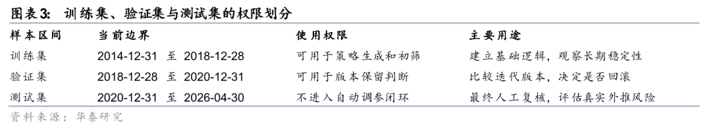
Skill构建
在本文框架中，Skill更倾向于被视为可执行的策略研究协议。它至少需要包含以下信息：第一，策略内核，即策略如何搭建；第二，数据和因子边界，即哪些因子可以使用、因子方向如何定义；第三，组合约束，即股票池、调仓频率、持仓数量、单票上限和交易成本等；第四，迭代边界，即哪些参数可以通过入参调整，哪些公共代码和工具函数原则上不能改动；第五，评价体系，即训练集、验证集和测试集分别承担什么角色。
我们的实现方式，是将这些信息分散但互相连接地落在多个文件中。SKILL.md提供策略说明、迭代约束和操作纪律等；skill_config.yaml提供可机器读取的参数配置，包括股票池、因子组、组合规则和可调参数等；skill_strategy_gen.py读取配置并生成持仓；skill_strategy_backtest.py读取持仓并完成分样本回测；version文件夹保存每个版本的配置、权重、得分、调仓日和回测结果。
我们对Skill的自由度设置相对克制。默认原则是不修改已有策略代码、回测代码和其他工具代码，除非发现确定性错误，或现有命令行入口无法表达已经允许的配置参数。每轮迭代应只围绕一个主要假设展开，例如提高分红防守权重、调整价值基础池阈值、放宽流动性门槛或替换同一逻辑下的候选因子。尽管这样的约束看似降低了搜索空间，但实际上有助于保证每次改动都能被解释和复盘。
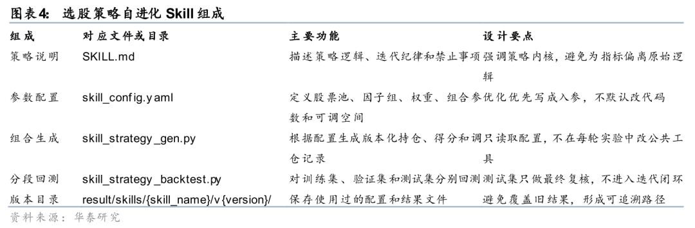
初始版本选股策略构建
本文的初始策略为稳健低波价值优选，核心目标是在全市场股票池中寻找具备价值安全边际、分红支撑、盈利稳定和较低波动特征的股票。与单纯红利策略不同，该策略并非只按照股息率排序，其基本思想是先确认公司具备正盈利和估值数据，再在行业和盈利能力可比的条件下寻找估值更有吸引力的股票，最后叠加质量、分红、成长稳定和风险约束构建组合。
第一步是构建可选池。初始版本全A股作为基础股票池，并要求股票处于可交易状态、ROE为正、估值因子可得、流通市值和成交额数据无缺失。随后通过流通市值和20日成交额分位数过滤极端小市值和低流动性股票，默认阈值分别为0.35和0.40；若候选数量不足，则回退至较宽松阈值。该步骤的作用是保证后续打分主要发生在具备基本可交易性的股票中，避免组合由流动性缺陷主导。
第二步是构建价值基础池。策略以EP_TTM作为价值因子，以ROE_TTM作为盈利能力锚，在行业内做相似盈利能力下的估值比较。具体而言，策略在每个调仓日用行业内回归方式刻画估值与ROE之间的关系，并根据残差识别在相似盈利能力下估值更具安全边际的股票。默认保留价值残差排序较优的三分之一股票作为基础池；若基础池数量不足，则使用较宽松阈值保证组合可构建。
第三步是在价值基础池内计算三组得分。leader组刻画龙头质量，使用ROIC_TTM和收入规模代理，并在行业内排序，权重为1/3；dividend组刻画分红和现金流防守能力，使用两年平均股息收益、两年平均股利价格比、经营现金流收益和60日波动率，权重为1/3；growth_stability组刻画成长稳定性，使用净利润增速和利润增长稳定性，权重为1/3。三组得分共同决定选股排序，使策略既保留红利低波特征，又避免陷入单一高股息或低波动暴露。
第四步是组合构建。策略按月调仓，默认目标持仓30只，缓冲池45只，单票权重上限5%。在确定入选股票后，策略使用下行波动率作为风险因子进行倒数定权，使低下行风险股票获得更高权重，同时通过单票上限控制集中度。初始版本不加入市场择时或仓位择时，剩余优化也应主要围绕红利、防守、价值安全边际和低波风险控制展开，而不是通过改变仓位暴露来提高历史指标。
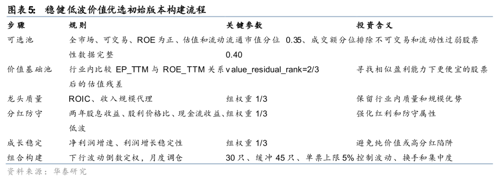
结果
总体迭代效果
从迭代轨迹看，训练集、验证集和测试集显示出的规律有所不同。训练集结果显示，初始版本在长期样本中的夏普比率偏低，早期围绕价值基础池和成长稳定过滤的调整曾带来明显改善，但后续并非所有修改都能维持训练集表现。
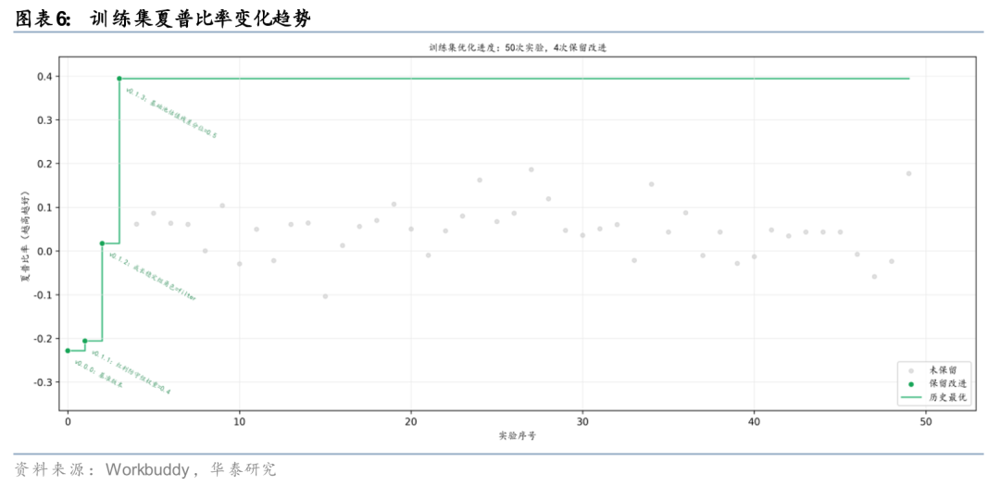
验证集结果呈现更清晰的阶梯式改善，保留版本的验证集夏普比率由初始版本的1.05逐步提高至1.29附近。该结果说明，在固定策略内核、限制可调方向的前提下，围绕红利防守、估值基础池、持仓数量、缓冲池和流动性约束的配置化迭代，能够在验证样本上形成连续改进。但验证集本身仍然只承担版本筛选功能，不能被直接解释为真实收益能力。
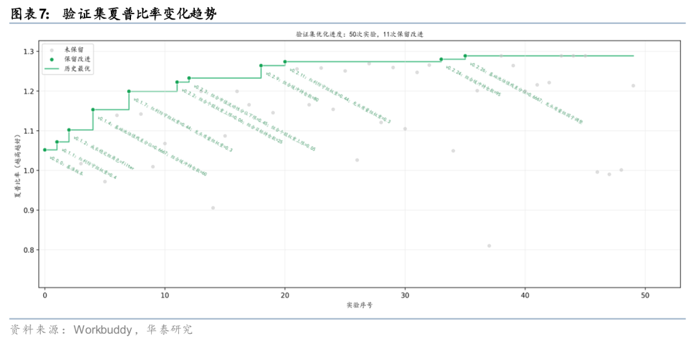
测试集结果相对验证集的提升更为保守。部分验证集保留版本在测试集上没有同步提升，但测试集运行最优线仍从初始版本约0.69抬升至0.89，说明验证集筛选并非完全无效。
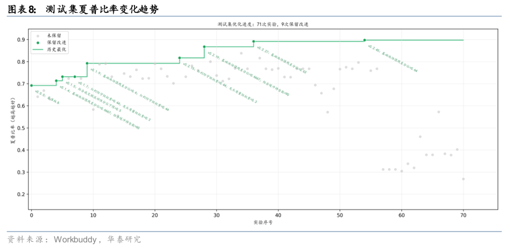
从测试集净值曲线看，保留改进版本大体沿着同一类红利低波组合形态演化，并未表现为完全不同的收益路径。初始版本在测试期内上行趋势确定，但波动和回撤偏高；后续迭代版本则实现在相近净值趋势下提高收益风险比。
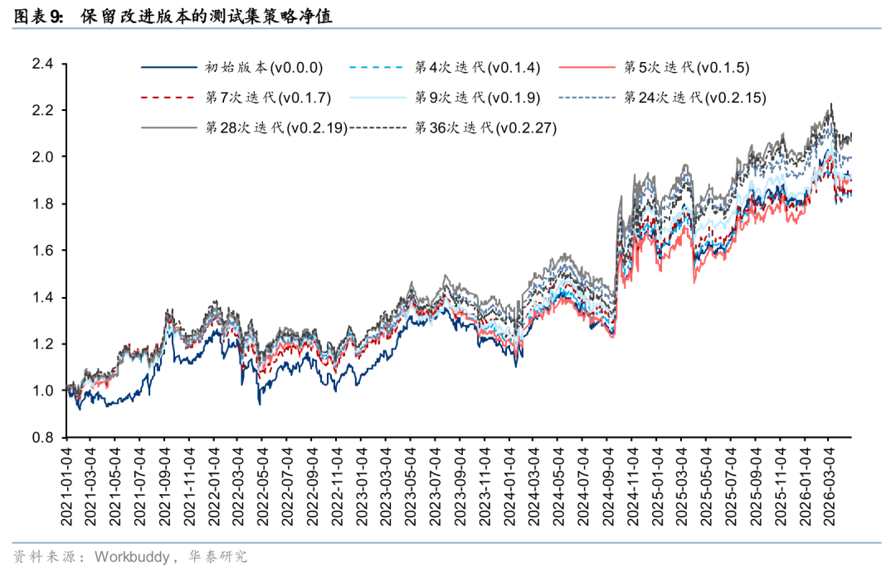
从测试集绩效表看，保留改进版本呈现出较为清晰的综合改善。初始版本测试集年化收益率为13.47%，年化波动率为19.46%，夏普比率为0.69，最大回撤为25.59%，年化双边换手率为10.66。随着迭代推进，多个保留版本在降低波动和回撤的同时提升夏普比率；至v0.2.27版本，测试集年化收益率提升至15.67%，年化波动率下降至17.58%，夏普比率提升至0.89，年化双边换手率下降至8.70。
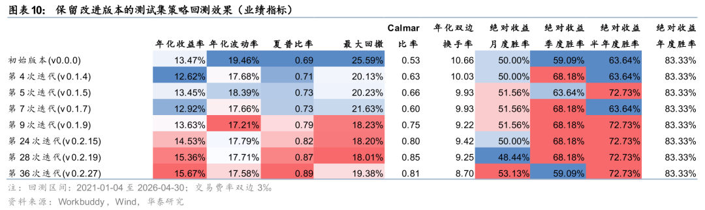
进一步看，改进并不是单纯来自承担更高风险。v0.1.9之后，策略夏普比率从0.79逐步提升至0.89，期间年化波动率大致维持在17%至18%附近，年化收益率则从13.63%提升至15.67%。最大回撤从初始版本的25.59%下降到v0.2.19的18.01%，虽然v0.2.27回撤小幅回升至19.38%，但仍明显低于初始版本。换手率也从10.66下降到8.70，说明部分改进同时改善了换手频率。
验证集驱动的策略改进
验证集是驱动Skill改进策略的核心参照。从跨样本对比看，验证集驱动的策略改进具有一定外推效果。验证集夏普比率基本单调抬升，测试集夏普比率总体也有所改善。
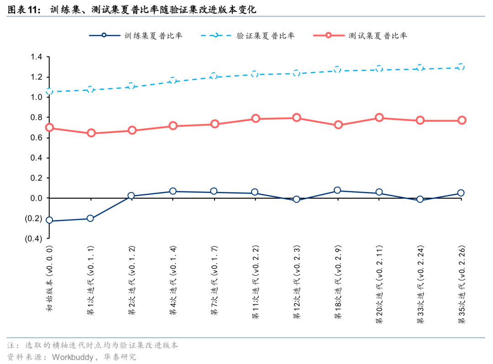
对比验证集与测试集的夏普比率和年化收益率的对应关系，如下图，可看到验证集和测试集之间存在正相关。验证集夏普比率更高的版本，测试集往往并不差，但测试集提升幅度总体小于验证集提升幅度。
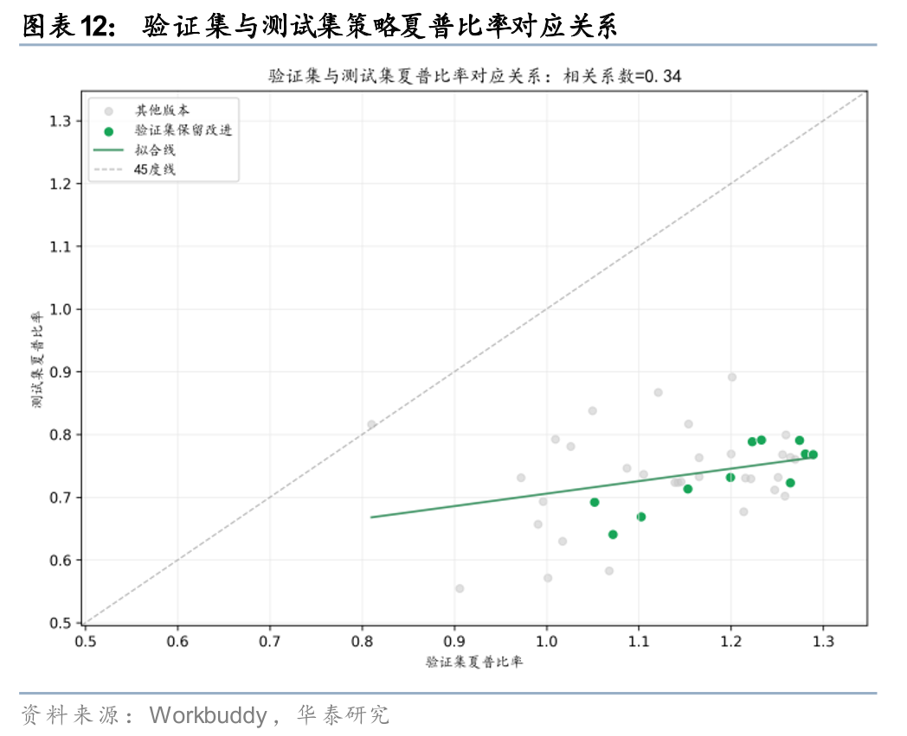
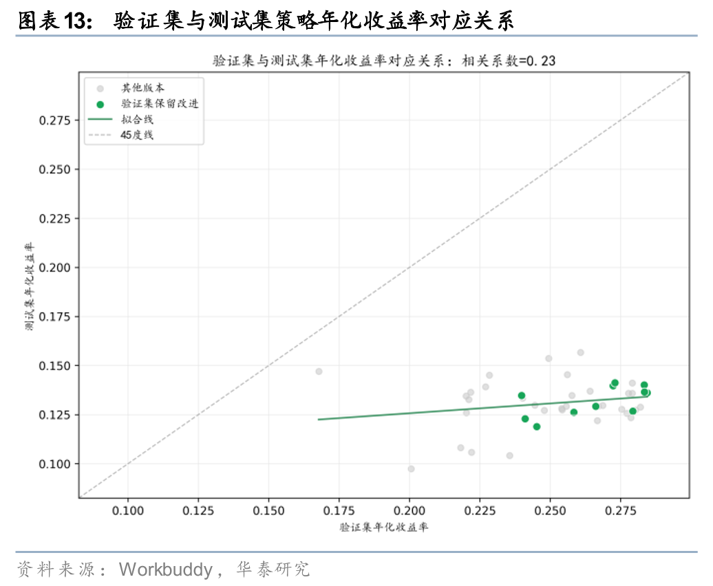
策略迭代：从反复尝试中形成逻辑推进路径
我们尝试观察夏普提升版本的改进逻辑，可看到验证集提升主要来自多次小幅调整的累积，而不是单次大幅跳跃。有效方向集中在红利防守权重、价值基础池阈值、组合缓冲持仓数、个股权重上限和流动性约束等变量上，这些变量均未偏离稳健红利策略内核。反观一些看似能提高局部表现的复杂因子替换，并未稳定进入最终测试集优势版本。
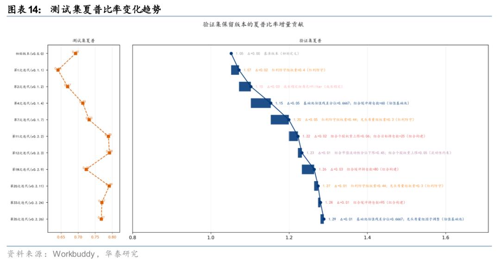
优化方向网络也提供了有价值的复盘视角。若节点代表优化方向、边代表相邻策略迭代之间的方向转移，则一条成功的自进化路径不应表现为无约束随机搜索，而应表现为围绕少数核心问题逐步收敛。在当前优化策略中，合理的迭代应更多围绕分红防守、低波风险控制、价值基础池阈值、流动性约束和组合集中度展开，而不应频繁跳转到与策略内核无关的风格暴露。
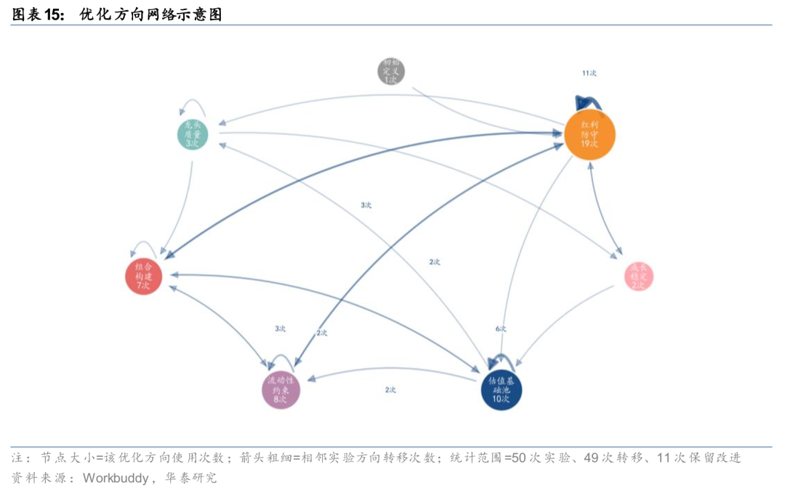
总结与展望
综上我们认为，基于Skill的选股策略自进化是可行方向，但其价值不在于无约束地尝试更多参数，而在于将量化研究流程化、Agent智能化。AutoResearch的启发在于，研究并不一定只能依赖手工推进；当任务目标、可修改范围、评价指标、版本记录和回滚规则足够清楚时，研究过程可以被AI Agent持续迭代循环。量化投资可以借鉴这一结构，但需要更强调样本隔离、版本纪律和投资逻辑约束。
对本文测试而言，稳健低波价值优选策略的初始版本提供了清晰的投资内核，在相似行业和盈利能力条件下寻找估值更具安全边际的股票，再叠加龙头质量、分红稳定、成长稳定和低波风险控制。后续迭代应围绕这一内核展开，而不是通过市场择时、仓位择时或偏离红利低波逻辑的风格切换来提高回测指标。换言之，Skill首先作为约束文件提供约束，其次才应是自动迭代入口。
从结果上看，保留改进版本在测试集上实现了较为稳健的提升，年化收益率从13.47%升至15.67%，夏普比率从0.69升至0.89，年化波动率和换手率均有所下降。我们认为，这说明配置化迭代能够帮助系统探索策略空间，并将有效修改沉淀为版本记录。但结果同时也提醒我们，验证集改善并不等于真实外推能力，在实际策略评价时，版本保留可能仍需结合测试集复核、持仓集中度、行业暴露、交易成本和失败场景共同判断。
本文仍有不少未尽之处，以下或是值得关注的方向。第一，进一步规范Skill中的可调入参，将分红、低波、价值基础池、流动性和组合集中度等方向写成明确参数，避免临时更改代码。第二，在版本日志中进一步详细记录每轮假设、修改项、训练集和验证集证据、失败归因以及是否保留，使优化路径更可审计。第三，将结果复盘从单一收益指标扩展到收益来源、换手、行业暴露和个股贡献，避免少数股票或单一市场阶段主导结论。
风险提示
大模型是海量数据训练获得的产物，输出准确性及稳定性可能存在风险；不同大模型效果存在差异，需谨慎选择；非本地大模型处理敏感数据或有信息泄露风险。
文章来源
研报《自进化Skill：选股策略的自动迭代》2026年5月25日
沈洋 分析师 S0570525070013
何康 分析师 S0570520080004 | BRB318
关注我们
华泰证券研究所国内站（研究Portal）
https://inst.htsc.com/research
访问权限：国内机构客户
华泰证券研究所海外站
https://intl.inst.htsc.com/research
访问权限：美国及中国香港金控机构客户
添加权限请联系您的华泰对口客户经理
免责声明